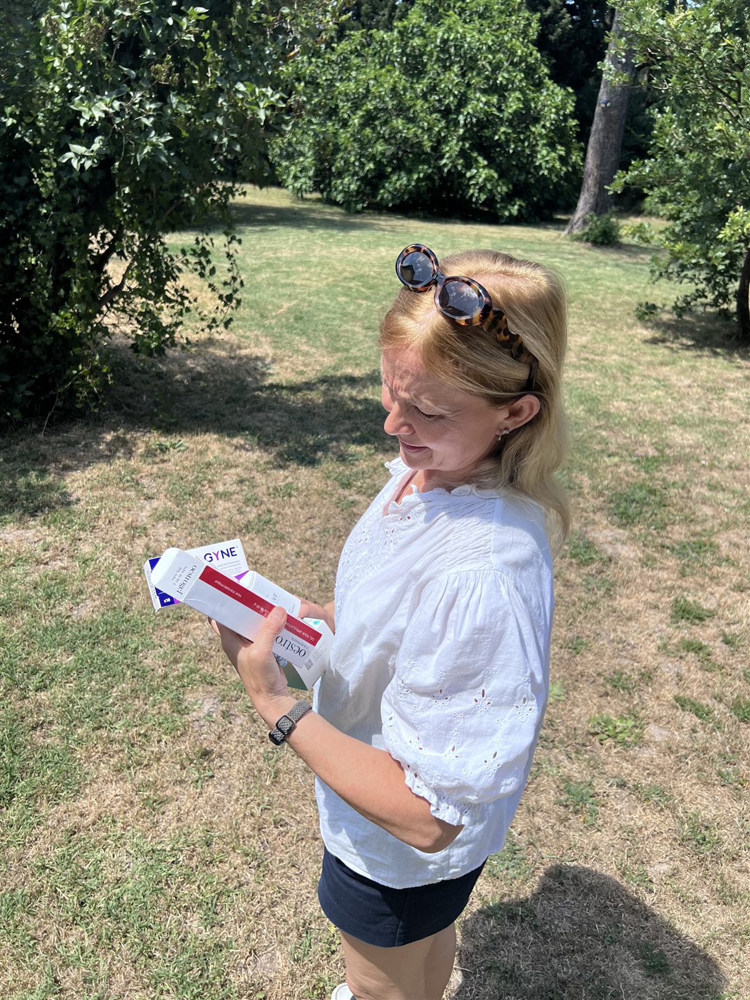
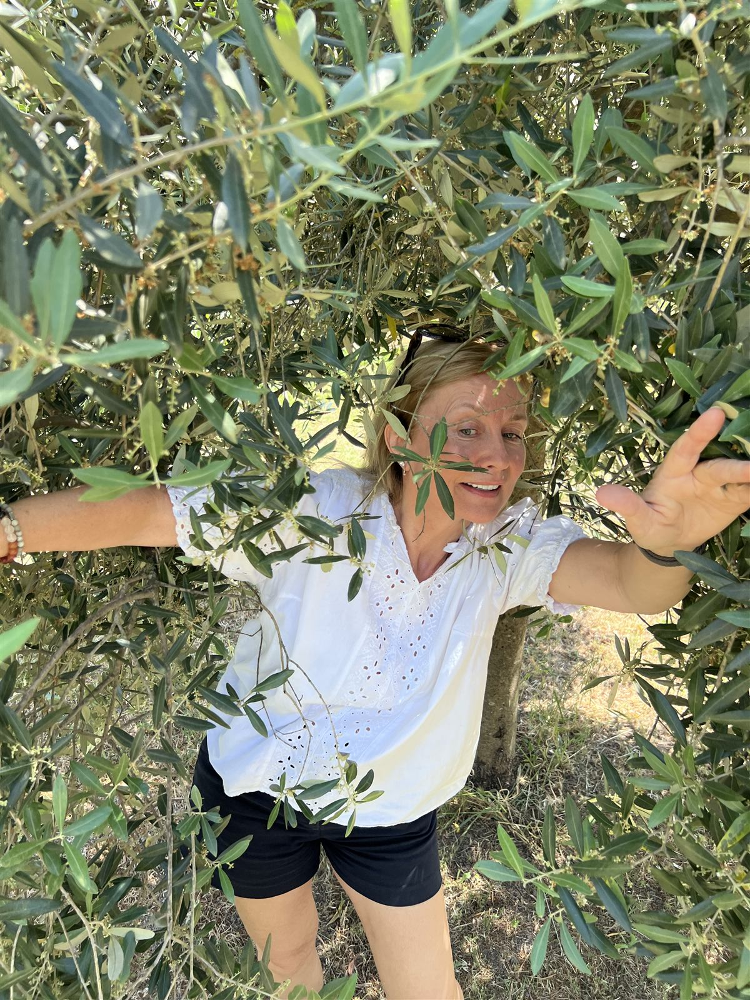
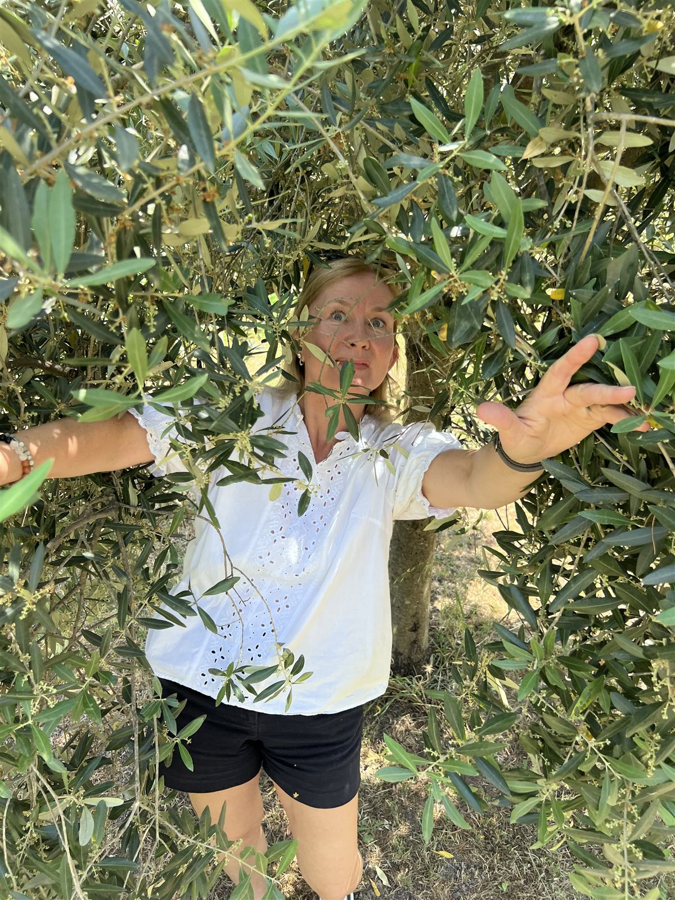
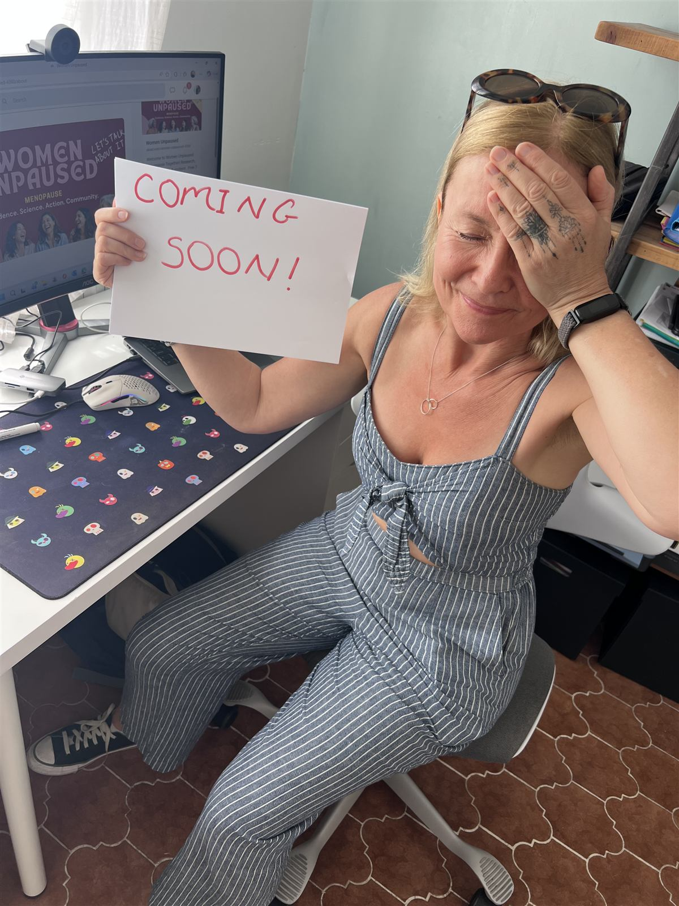

About
Why we exist
Half the population goes through menopause, yet the research that could help sits scattered across journals nobody has time to read. We translate evidence into action — for women, and for everyone whose decisions affect them.
Many women spend years being told it's "just stress".
We started Health Unpaused to change that. This won't always feel like this — and understanding what's happening is the first step towards feeling better.

The people behind it
Lived experience, meet research rigour
Kia Holm Reimer
"I'm peri-menopausal, and I've lived the problem we're solving. I saw countless doctors, had endless scans, listened to 50+ hours of menopause podcasts, and spent years just trying to figure out what was 'wrong' with me. I didn't find an easy solution — so I created it."
Nicky Draper
Former nurse with 20 years' experience in primary and acute care. Researcher in ageing, longevity and women's health since 2007.
Lived menopause, researched it — now demystifying it. Passionate about clear, evidence-based health communication, and about helping women understand their bodies at every stage.
In their words
Meet the founders
A short introduction from the two people behind Health Unpaused — why we started, what we felt was missing, and how one clear monthly report can replace hours of scattered searching.
How we workHow we build
Our commitments
Inclusive by design
We say "partner", not wife or husband. Our imagery and language reflect all genders, ages and cultures — and you can always reach us the way that suits you: email, form or a video call.
Accessible by default
Focus Mode — the switch in the top bar — simplifies layout and typography across the whole site. Built for readers with ADHD, autism and dyslexia, useful for everyone.
Evidence over opinion
Science, evidence, action — in that order. If the evidence is thin, we say so. If it changes, we update. Our credibility is the entire product.
Behind the scenes
Built in the open — the unpolished version
No agency photoshoot, no stock models. This is what building Health Unpaused actually looks like: real research, real menopause, and a sense of humour about both.









Independent research, in your corner
No pharma funding, no product to sell — just the evidence, distilled. Come and be part of it.
Join the community ↗